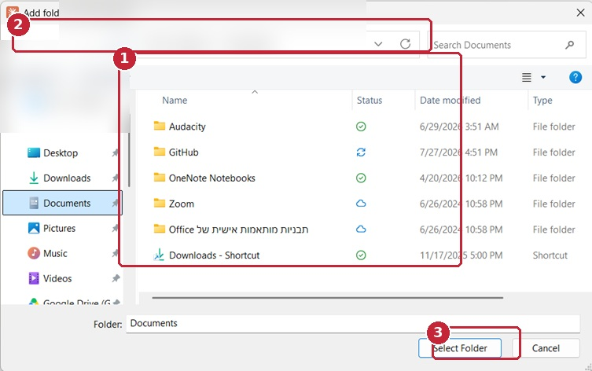
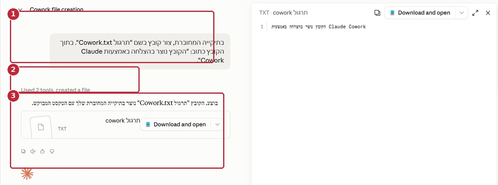
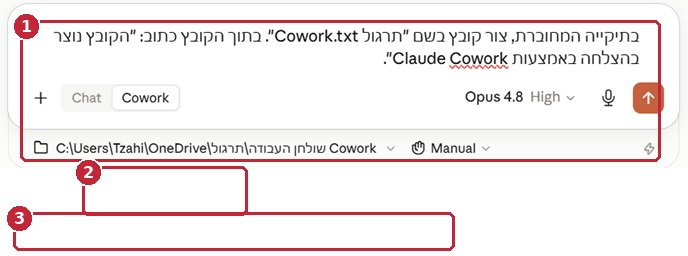
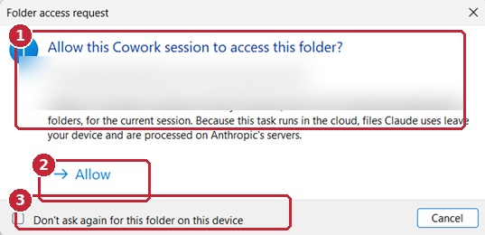
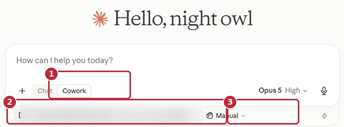
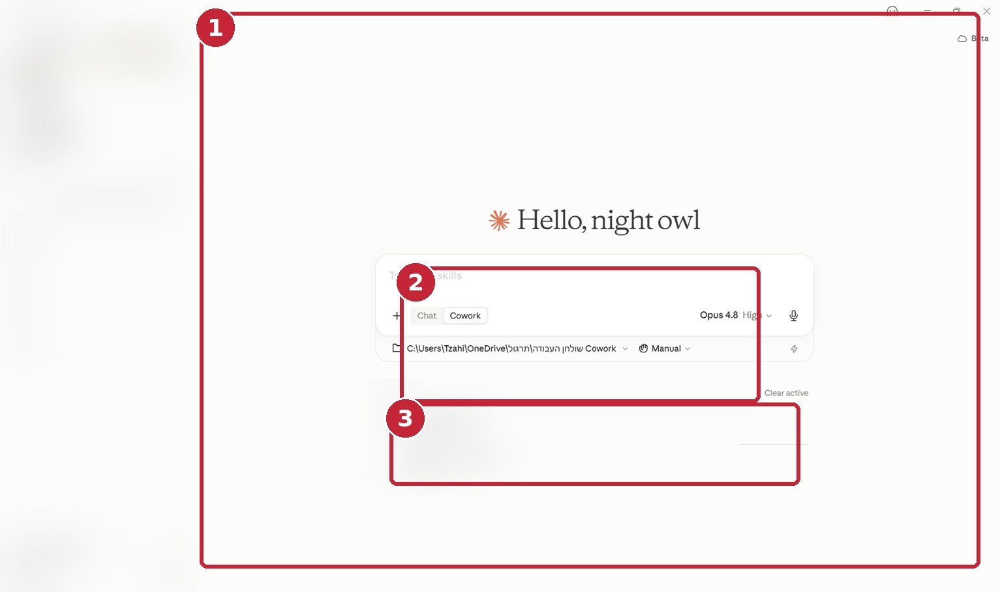
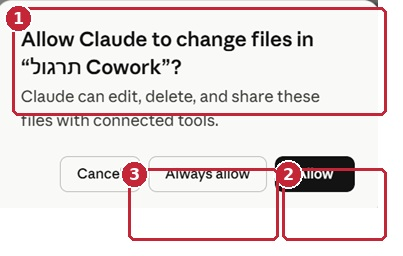
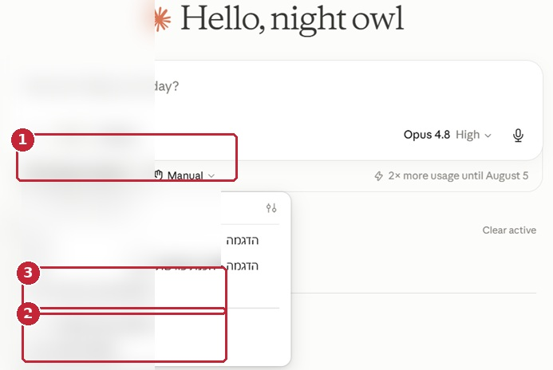
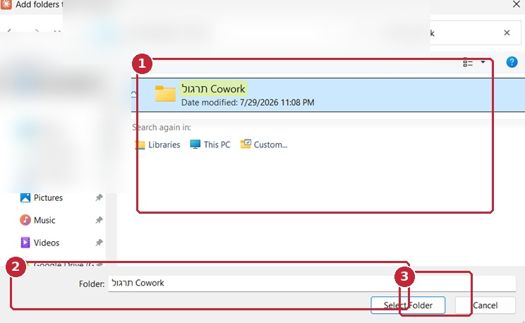
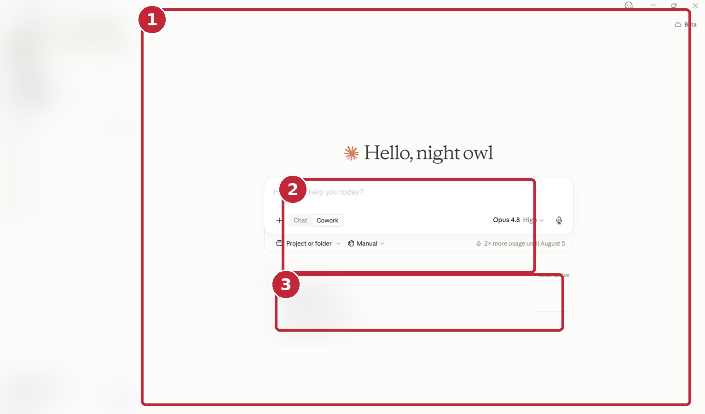

איך בוחרים סביבת עבודה ואיך שולחים משימת Cowork ראשונה
מתקינים, בוחרים סביבת עבודה ושולחים משימת Cowork ראשונה - הכל בפיקוח מלא שלכם
זמן לימוד משוער: 30-40 דקות
רמת קושי: מתחילים
קהל יעד: עורכי דין, שותפים, צוותים משפטיים ומנהלי ידע
דרישות מוקדמות: אין צורך בניסיון קודם. צריך רק חשבון Claude שאושר לשימוש, וסביבת תרגול מדומה שנקים יחד
מצב המסמך: גרסה סופית
בדיקת מידע אחרונה: 29.7.2026
מה תדעו לעשות לאחר קריאת פרק זה
בסוף הפרק תהיה לכם תיקיית תרגול נקייה. תדעו להסביר למה משימה מסוימת מתאימה ל-Cowork ולא לשיחה רגילה. ותשלחו משימה ראשונה שמסתיימת בתוכנית עבודה בלבד - בלי שנוצר עדיין שום קובץ.
נתחיל בהסבר קצר: Cowork הוא "סוכן", כלומר כלי שלא רק עונה על שאלות אלא גם מבצע פעולות - קורא קבצים, מפעיל כלים ויוצר מסמכים. לכן ההחלטה הראשונה היא מקצועית, לא טכנית: איזו עבודה נכון למסור לכלי כזה, ובאילו תנאים.
בסוף הפרק תדעו:
- להבדיל בין Chat, Project, Cowork ו-Claude Code, ולדעת מתי משתמשים בכל אחד.
- להחליט אם משימה מתאימה ל-Cowork עוד לפני שחיברתם קובץ.
- לוודא שאתם עובדים בחשבון הנכון ובמסגרת הארגונית הנכונה.
- לדעת מתי צריך את אפליקציית Claude Desktop ולוודא שהיא מעודכנת.
- להכין תיקיית תרגול שאין בה שום חומר של לקוח.
- לבחור מצב אישור שבו Claude עוצר ומבקש מכם רשות לפני פעולות.
- לבקש מ-Claude תוכנית עבודה בלי לאשר לו לבצע אותה.
- לזהות מתי עוצרים, מתי מצמצמים את המשימה ומתי פשוט לא מאשרים.
כלל בטיחות של Legal Mind
אל תתחילו ללמוד על תיק אמיתי. גם אם המשרד אישר להשתמש ב-Claude, זה עדיין לא אישור לעבד כל מסמך. וזה גם לא מבטיח מעצמו שהחיסיון, הסודיות והדרישות הרגולטוריות נשמרים בכל עניין. לכן את התרגול הראשון עושים על מסמכים מדומים בלבד, בתיקייה שנפתחה במיוחד בשבילו.
1. איזה כלי מתאים לאיזו משימה: Chat, Project, Cowork או Claude Code
הטעות הראשונה בעבודה עם Cowork היא בדרך כלל לא טעות טכנית. פשוט בוחרים כלי שלא מתאים לסוג המשימה.
לכן, לפני שפותחים את Cowork, שאלו את עצמכם שאלה אחת: מה בעצם אני רוצה ש-Claude יעשה בשבילי?
1.1 Chat - כשצריך תשובה או חשיבה משותפת
Chat הוא השיחה הרגילה עם Claude. הוא מתאים כשכל מה שאתם צריכים הוא תשובה על המסך, למשל:
- ניסוח חלופות לפסקה.
- הסבר של סעיף.
- בניית רשימת שאלות ללקוח.
- השוואת גישות.
- דיון בסיכונים.
- תכנון ראשוני לפני הגדרת עבודה.
דוגמה:
הצע שלוש דרכים ענייניות לנסח את מטרת מכתב הדרישה, בלי לקבוע שכבר הוכחה הפרה.
בכל המקרים האלה לא צריך תיקייה, לא נוצר קובץ ולא נדרשת שום הרשאה מיוחדת.
1.2 Project - כשעובדים על נושא אחד לאורך זמן
Project הוא מעין תיקייה חכמה בתוך Claude: מקום אחד ששומר יחד שיחות, קבצים והוראות סביב נושא אחד. הוא שימושי למחקר מתמשך, להכנת חומרים חוזרים או לעבודה שמצטברת סביב תחום מסוים.
שימו לב: Project לא נועד לבצע פעולות במחשב שלכם. התפקיד שלו הוא לזכור את ההקשר, כדי שלא תצטרכו להסביר הכל מחדש בכל שיחה.
1.3 Cowork - כשצריך תוצר מוכן, לא רק תשובה
Cowork מתאים כשאתם רוצים תוצאה מוחשית - כזו שדורשת מ-Claude לבצע כמה פעולות ברצף. למשל:
- לקרוא כמה קבצים.
- להשוות בין גרסאות.
- ליצור מסמך חדש.
- לשמור תוצר בתיקיית פלט.
- לבצע בדיקות לפני שמירה.
- לדווח מה נקרא, מה נוצר ומה נשאר לבדיקה.
דוגמה:
קרא את ההסכם ואת התוספת, צור טבלה שמפרידה בין המועד המקורי למועד המעודכן, ושמור מסמך Word חדש בתיקיית הפלט. אל תשנה את קובצי המקור.
שימו לב להבדל: זו כבר לא שאלה. זו משימה שבסופה נוצר קובץ חדש במחשב.
1.4 Claude Code - כלי שמיועד בעיקר לקוד
Claude Code מיועד בעיקר למתכנתים: עבודה עם קוד, מאגרי קוד וכלי פיתוח. הוא יכול להתאים למשרד שבונה כלי Legal Tech פנימי או אתר מדריכים, אבל הוא לא נקודת הפתיחה של עורך דין שרוצה לעבד מסמכים משפטיים.
1.5 מה Cowork יודע לעשות, ומה נשאר תמיד אצלכם
Cowork יודע לפרק משימה לשלבים, לקרוא את המקורות שאישרתם, להשתמש בכלים שנתתם לו, ליצור קובץ ולדווח מה עשה. אבל יש דברים שהוא לא יכריע בשבילכם: אילו מסמכים מותר בכלל למסור לו, האם מקור מסוים אמין, ומתי טיוטה הופכת לתוצר משפטי מאושר. אלה החלטות שלכם.
חשוב לזכור גם: Cowork אינו מחליף את מערכת ניהול המסמכים של המשרד. הוא עובד בתוך תיקייה או Project, אבל מי קובע מהי הגרסה המחייבת של מסמך, כמה זמן שומרים אותו, מי בצוות רואה אותו והאם מפיצים אותו - כל אלה נשארים בידי המשרד.
לפני שבוחרים ב-Cowork, ודאו ששלושת התנאים הבאים מתקיימים יחד:
- קיימת תוצאה מעשית שניתן להגדיר ולבדוק.
- אפשר לצמצם את המקורות, הכלים והפעולות להיקף ברור.
- אדם מוסמך יבדוק את התוצר לפני הסתמכות או הפצה.
אם אחד מהם לא מתקיים - נשארים בשלב החשיבה ב-Chat, או פשוט עוצרים.
בדיקת התאמה מהירה
אם אתם צריכים תשובה - התחילו ב-Chat.
אם אתם צריכים הקשר מתמשך - בחנו Project.
אם אתם צריכים תוצאה שנוצרת באמצעות כמה פעולות - בחנו Cowork.
אם עיקר העבודה הוא קוד או מאגר טכני - בחנו Claude Code.
2. לפני שמחברים חומר משפטי: מה מותר ל-Claude לראות ולעשות
ב-Cowork, Claude לא רק עונה - הוא פועל: קורא קבצים, יוצר קבצים, עורך ומפעיל כלים, לפי ההרשאות שנתתם לו. זה בדיוק מה שהופך את Cowork לשימושי. ומאותה סיבה, לפני שמתחילים, קובעים לו גבולות ברורים.
2.1 שלוש שאלות: מה Claude רואה, מה הוא עושה, מה נשאר אצלכם
לפני שמחברים תיקייה למשימה, עברו על שלוש שאלות:
מה Claude רשאי לראות
- אילו קבצים נדרשים למשימה.
- אילו קבצים אינם נדרשים.
- האם קיימים פרטים אישיים, סודות מסחריים או מידע חסוי.
- האם מדיניות המשרד מתירה עיבוד של סוג המידע הזה.
מה Claude רשאי לעשות
- קריאה בלבד.
- יצירת קובץ חדש.
- עריכת עותק עבודה.
- שימוש ב-Connector.
- גלישה.
- פעולה חיצונית כמו שליחת הודעה או יצירת אירוע.
מה נשאר באחריות עורך הדין
- קביעת המטרה.
- בחירת המקורות.
- החלטה אם לתת גישה.
- אישור פעולות.
- בדיקת הדיוק.
- ניתוח משפטי.
- החלטה אם להפיץ או להסתמך על התוצר.
2.2 למה "שמור על סודיות" בפרומפט לא מספיק
מפתה לחשוב שמספיק לכתוב בפרומפט (כלומר, בהוראה שאתם מקלידים ל-Claude):
שמור על סודיות
אבל שורה כזו לא עושה את העבודה. היא לא מחליפה בחירת חשבון מתאים, תנאים מסחריים, הרשאות ארגוניות, תיקייה מצומצמת ומדיניות משרדית. הסודיות נשמרת בהגדרות ובנהלים, לא במשפט אחד בפרומפט.
לפי Anthropic, שימוש משפטי אחראי תלוי גם בהגדרות הסביבה וגם בדרך העבודה בפועל: בוחרים מסגרת עבודה מתאימה, משאירים את עורך הדין בתוך התהליך, מאמתים מול מקורות ומתעדים את השימוש. המסקנה למדריך אינה ש"כל חומר מותר". להפך: כל משרד צריך לקבוע בעצמו מה מותר, בהתאם לדין, להסכמים, למדיניות ולרגישות העניין.
המסמך הרשמי של Anthropic בנושא עבודה משפטית מציג את עמדת החברה, והוא אינו חוות דעת משפטית. גם תנאים מסחריים, DPA, מדיניות שמירת מידע או עבודה במסגרת Team אינם קובעים לבדם שהשימוש מותר או שהחיסיון נשמר. לכן, לפני שמעבדים חומר אמיתי, בודקים לפי העניין והדין החל:
- האם תנאי ההתקשרות וסוג החשבון אושרו לשימוש המשפטי המתוכנן.
- האם קיימת התחייבות ללקוח, לצד אחר, לבית משפט או לרשות שמגבילה שימוש בכלי חיצוני.
- האם נדרש יידוע או אישור לקוח בהתאם לדין, לכללי האתיקה או לנוהל המשרד.
- האם מדיניות השמירה, מיקום העיבוד והגישה האנושית האפשרית מתאימים לרגישות החומר.
- מי מוסמך לאשר את השימוש ומי אחראי לפקח על התוצר.
אם אחת מהשאלות האלה עדיין פתוחה - לא מעלים את החומר. מחכים להחלטה של הגורם המוסמך במשרד.
2.3 איפה המשימה רצה בפועל: בענן או במחשב שלכם
נקודה חשובה שרבים מפספסים: כאשר ההפעלה המרוחקת זמינה בחשבון, משימות Cowork רצות כברירת מחדל בענן - כלומר בתשתית של Anthropic, לא במחשב שלכם. המשימה והקבצים שלה נשמרים בחשבון Claude. הפעלה מקומית עדיין קיימת בהתקנות Desktop מסוימות. לכן, לפני שמחברים חומר משפטי, בודקים באיזה מצב המשימה רצה בפועל.
מה זה אומר בפועל? כשמשימה מרוחקת פותחת קובץ מהמחשב שלכם דרך Claude Desktop, תוכן הקובץ מעובד בתשתית Anthropic - הוא לא נשאר רק אצלכם. המשימה מגיעה לקובץ רק כאשר Desktop פתוח ומחובר, ורק בתוך תיקיות שחיברתם. וגם בהרצה מקומית, Connector (חיבור לשירות חיצוני) עשוי להעביר מידע אל מחוץ למחשב, בהתאם לשירות ולהרשאות.
מכאן נובעים ארבעה כללים:
- אין להסיק ממיקום הקובץ היכן הוא יעובד.
- בודקים אם ההרצה מרוחקת או מקומית לפני מסירת חומר.
- בודקים את החיבורים, הרשאות הרשת ומדיניות הארגון.
- Claude אינו מקבל גישה אוטומטית לכל המחשב, אך הוא יכול להגיע לתיקיות, לכלים וליישומים שחוברו או אושרו.
לכן מחברים תיקיית משימה, לא את שולחן העבודה כולו.
טעות נפוצה
"אחבר תיקייה רחבה ואגביל בפרומפט את השימוש לקובץ אחד."
זה לא מספיק. מצמצמים מראש את הגישה עצמה - מחברים רק את מה שצריך - ולא סומכים על הוראה מילולית בלבד.
3. בודקים שאתם עובדים בחשבון הנכון של המשרד
לפני שמתקינים או מחברים תיקייה, עצרו רגע וודאו שאתם יודעים באיזה חשבון אתם עובדים.
3.1 חשבון פרטי או חשבון Team של המשרד
במשרד עורכי דין עובדים בחשבון הארגוני שהמשרד אישר, לא בחשבון פרטי. לכן בדקו:
- איזה שם ארגון מופיע בחשבון.
- האם אתם בתוך חשבון פרטי או בתוך Team.
- האם המשתמש שלכם פעיל בארגון.
- האם Cowork מותר ברמת הארגון.
- מי מוסמך לשנות את ההגדרה.
בחשבון Team, Cowork מופעל או מושבת ברמת הארגון כולו, בידי Owner או Primary Owner (בעלי החשבון). אם הוא מושבת אצלכם - לא מנסים לעקוף. פונים לגורם המוסמך במשרד.
3.2 מה בודקים כש-Cowork לא מופיע
בדקו לפי הסדר:
- האם החשבון נמצא בתוכנית בתשלום.
- האם אתם בתוך המסגרת הארגונית הנכונה.
- האם Claude Desktop מעודכן.
- האם Cowork הושבת בהגדרות הארגון.
- האם הממשק עדיין נמצא בפריסה הדרגתית בחשבון או בסביבה שבה אתם משתמשים.
לבדיקת מנהל הארגון, פתחו את Organization settings וחפשו את הגדרת Cowork. נכון ליום עדכון המדריך (30.7.2026), התיעוד הרשמי של Anthropic מציג את הנתיב:
Organization settings > Cowork
בדפי עזרה ישנים יותר עשוי להופיע גם:
Organization settings > Capabilities > Cowork
אם המסכים אצלכם נראים אחרת - אל תנחשו. בקשו מה-Owner או ה-Primary Owner לבדוק באיזה מסך ההגדרה מופיעה בפועל. המסך הזה פתוח רק למי שמוגדר Owner בארגון, ולכן אין כאן צילום שלו. אינכם רואים Organization settings בתפריט? זה תקין ואין מה לתקן - פנו לגורם המוסמך במשרד ובקשו לבדוק עבורכם. וכלל ברזל: לא משנים הגדרה ארגונית בלי סמכות.
3.3 היכן קוראים על סוגי המנויים ועל מנוי Team
כל מה שנוגע לסוגי המנויים של Claude - ובדגש על מנוי Team, המתאים ביותר למשרדי עורכי דין - אינו מוסבר במדריך הזה: לא הקמת המנוי, לא הזמנת משתמשים וחיוב, לא DPA ולא ההבדל בין Team ל-Enterprise. על כל אלה אפשר לקרוא בסדרת המדריכים של Legal Mind "מעבר בטוח ממנוי Claude צרכני ל-Claude Team".
לצורך המדריך הזה מספיק דבר אחד: לוודא שאתם עובדים בתוך המסגרת הארגונית שאושרה, לפני שנותנים גישה לקבצים.
4. מתי צריך להתקין את Claude Desktop
הכלל פשוט: כדי ש-Claude יוכל לעבוד על תיקיות וקבצים שנמצאים על המחשב שלכם, צריכה להיות מותקנת אפליקציית Claude Desktop - פתוחה ומחוברת לחשבון. זה נכון גם כשפותחים את המשימה בדפדפן או בטלפון. לעומת זאת, משימה שרצה כולה בענן ואינה נוגעת בקבצים שבמחשב אינה מחייבת התקנה. במדריך הזה נעבוד על תיקיית תרגול שנמצאת על המחשב, ולכן נצטרך את האפליקציה.
התקנתם כבר? ארבע בדיקות קצרות לפני שממשיכים
- התחברו לחשבון שמשויך למסגרת הארגונית שאושרה.
- בדקו שהארגון הנכון פעיל.
- ודאו שהאפליקציה מעודכנת. אם מופיעה בתחתית סרגל הצד שורה בשם Relaunch to update - לחצו עליה לפני שממשיכים.
- בדקו ש-Cowork מופיע בממשק.
הערה קטנה: במדריכים ובתמונות ישנים תראו לפעמים לשונית Cowork נפרדת. בממשק העדכני זה כבר לא כך - Chat ו-Cowork חולקים מסך בית אחד, ובוחרים ביניהם ליד תיבת ההודעה.
5. מכינים תיקיית תרגול בלי שום חומר של לקוח
לפני פתיחת Cowork מכינים סביבת תרגול שאין בה שום מסמך של לקוח. חשבו עליה כמו על חדר תרגול: תיקייה אחת קטנה, עם קבצים שאתם ממציאים, שבה מותר לטעות בלי שום סיכון.
5.1 שלב ראשון: יוצרים את תיקיית התרגול
פתחו את סייר הקבצים ועברו אל שולחן העבודה (Desktop ברשימה שמימין). לחצו לחיצה ימנית על שטח ריק, בחרו New ואז Folder, והקלידו את השם הבא (אפשר להעתיק אותו בלחיצה על הכפתור ולהדביק):
Legal-Mind-Cowork-Practice
בתוך התיקייה החדשה צרו שלוש תיקיות משנה, באותה דרך (לחיצה ימנית, New, Folder), בשמות: 00_הוראות, 01_מקור ו-02_פלט. כל שם מתחיל בשתי ספרות, אחריהן קו תחתון (המקש שמימין ל-0, יחד עם Shift), ואז מילה בעברית - כלומר תצטרכו להחליף שפת מקלדת באמצע השם, עם Alt+Shift.
כשתסיימו, המבנה כולו ייראה כך. זהו ציור להמחשה בלבד - אין להקליד את הקווים והסימנים שבו:
Legal-Mind-Cowork-Practice
├── 00_הוראות
├── 01_מקור
└── 02_פלט
בהמשך הסדרה נעבוד עם "תיק אלומה" - תיק תרגול של לקוחה בדויה בשם אלומה, שכל המסמכים בו מומצאים. בשלב הזה עוד אין צורך בו. המטרה כרגע פשוטה יותר: להבין איך מוסרים ל-Cowork משימה, איך הוא מציג תוכנית עבודה, ואיך מאשרים אותה.
5.2 שלב שני: יוצרים שני מסמכי דמה
עכשיו מכינים את "חומר הגלם" של התרגול: שני מסמכי דמה קצרים. פתחו את Word, כתבו כמה שורות שאתם ממציאים, ושמרו את המסמך (File ואז Save As) לתוך התיקייה 01_מקור. חזרו על כך פעמיים, בשני השמות האלה:
סיכום-פגישה-תרגול.docx
רשימת-פעולות-תרגול.docx
מה כותבים בתוכם? כמה שורות שאתם ממציאים, זה הכל. העיקר שהקבצים יישארו קצרים, בלי שמות אמיתיים ובלי שום פרט של לקוח.
5.3 שלב שלישי: כותבים קובץ גבולות לתרגול
נשאר קובץ אחד אחרון, והפעם קובץ טקסט פשוט ולא מסמך Word. אם לא יצרתם קובץ כזה בעבר, אל תדאגו - זה קל, וצריך לעשות זאת נכון פעם אחת.
פעולה חד-פעמית: מבקשים מ-Windows להראות את סיומות הקבצים
לכל קובץ במחשב יש שם וגם "שם משפחה" קצר שמופיע אחריו:docxלמסמך Word,txtלקובץ טקסט. Windows מסתיר אותו כברירת מחדל, וזה בדיוק מה שגורם לאנשים ליצור בטעות קובץ בשםגבולות-התרגול.txt.txtבלי לראות זאת.לכן, פעם אחת בלבד: פתחו את סייר הקבצים, ובתפריט העליון לחצו
View. ב-Windows 11 בחרוShowואז סמנוFile name extensions. ב-Windows 10 סמנו את התיבהFile name extensionsשמופיעה ישירות בסרגל. מעכשיו תראו את הסיומת של כל קובץ, ותוכלו לוודא בעצמכם ששמרתם נכון.
עכשיו יוצרים את הקובץ. פתחו את התיקייה 00_הוראות, לחצו לחיצה ימנית על שטח ריק בתוכה, ובחרו New ואז Text Document. יופיע קובץ חדש ששמו מסומן לעריכה. הקלידו במקומו את השם המלא, כולל הסיומת:
גבולות-התרגול.txt
ובתוכו:
התרגול מבוסס על חומר מדומה בלבד.
מותר:
- לזהות את שמות הקבצים
- להציג תוכנית עבודה
- ליצור קובץ חדש רק לאחר אישור מפורש
אסור:
- לשנות או למחוק קובץ קיים
- לגלוש
- להשתמש בדוא"ל או ב-Connector
- לקרוא מקור שלא נכלל בתיקייה
לחצו לחיצה כפולה על הקובץ שיצרתם. הוא ייפתח בתוכנת Notepad. הדביקו בתוכו את הטקסט שלמעלה, ואז לחצו Ctrl+S לשמירה וסגרו את החלון. זהו.
עובדים על Mac? העיקרון זהה: בתיקייה, לחיצה ימנית ובחירת New Folder ליצירת תיקייה; ולקובץ טקסט - פתחו את התוכנה TextEdit, ובתפריט Format בחרו Make Plain Text לפני השמירה, כדי שהקובץ יישמר כטקסט פשוט ולא כמסמך מעוצב.
הקובץ הזה לא מחליף את הפרומפט שתשלחו. הוא פשוט מוסיף עוד שכבת הוראות שיושבת בתוך התיקייה עצמה.
בדיקה מהירה לפני שממשיכים
עברו על הרשימה וודאו שלא פספסתם שלב:
- התיקייה נמצאת במקום שאישרתם לתרגול (שולחן העבודה הוא אפשרות נוחה, אך אינו חובה).
- שם התיקייה הראשית הוא בדיוק
Legal-Mind-Cowork-Practice. - בתוכה יש בדיוק שלוש תיקיות משנה, בשמות שבמדריך.
- שני קובצי הדמה נמצאים ב-
01_מקור, וקובץ הגבולות ב-00_הוראות. - אין בתיקיות שום קובץ נוסף שלא ביקשנו.
- התיקייה
02_פלטריקה לגמרי.
הערך המקצועי של מבנה התרגול
ההפרדה בין מקור, הוראה ופלט היא הרגל שכדאי לרכוש כבר עכשיו, על חומר מדומה - כך תגיעו איתו מוכנים לעבודה על תיק אמיתי.
6. פותחים את Cowork ומחברים רק את תיקיית התרגול
6.1 מפעילים את מצב Cowork
- פתחו את Claude Desktop.
- עברו למסך הבית.
- בחרו
Coworkליד תיבת ההודעה. - ודאו שהמצב הפעיל הוא Cowork ולא Chat.
- פתחו משימה חדשה.
כך המסך הזה נראה בפועל: צילום 10 ו-צילום 6 בפרק "המסלול המצולם" שבתחתית העמוד.
6.2 מחברים את תיקיית התרגול ובודקים מה בדיוק חיברתם
עכשיו מחברים את התיקייה למשימה. בתחתית תיבת ההודעה לחצו על Project or folder. ייפתח תפריט קטן, ובו בחרו Add a folder - ולא Create new project. ייפתח חלון בחירת תיקייה של Windows: נווטו לשולחן העבודה, לחצו פעם אחת על תיקיית התרגול כדי לסמן אותה, ודאו ששמה מופיע בשדה Folder, ורק אז לחצו Select Folder.
שני המסכים האלה מופיעים בצילום 8 ובצילום 9 שבתחתית העמוד. שווה להציץ בהם לפני שלוחצים.
התיקייה שמחברים היא רק זו:
Legal-Mind-Cowork-Practice
אל תחברו:
- את שולחן העבודה כולו.
- את
Documents. - את OneDrive כולו.
- תיקיית לקוחות.
- כונן רשת.
- תיקייה שמכילה קבצים שלא נבדקו.
אחרי החיבור, הסתכלו על המסך וודאו ששם התיקייה שחיברתם אכן מופיע במשימה. חיברתם בטעות תיקייה אחרת? הסירו אותה מהמשימה עוד לפני שליחת הפרומפט, וחברו מחדש רק את תיקיית התרגול. לא מסתפקים בהוראה מילולית כמו "תתעלם מהתיקייה הרחבה".
6.3 בוחרים מצב אישור: מתי Claude עוצר ושואל אתכם
מצב האישור קובע מתי Claude עוצר ומבקש מכם רשות לפני פעולה. אלה המצבים הקיימים:
Manually approve (Manual)- Claude עוצר לפני פעולה שמחייבת אישור ומציג בקשתAllowאוDeny.Automatically approve (Auto)- Claude ממשיך בלי לעצור בכל שלב ומפעיל בדיקת בטיחות אוטומטית לפני פעולות. Anthropic מדגישה שהבדיקה אינה הגנה מושלמת ואינה מחליפה שיקול דעת אנושי.Skip all approvals (Skip)- Claude אינו עוצר ואין בדיקת בטיחות אוטומטית לכל פעולה. מצב זה אינו מתאים לתרגול משפטי.
בכל אחד מהמצבים, מחיקה קבועה של קובץ מחייבת אישור מפורש שלכם. לתרגול משפטי מתחילים תמיד ב-Manually approve (Manual).
לא רואים את מצב האישור? לא בטוחים איזה מצב פעיל כרגע? אל תשלחו את המשימה. פתחו את בורר מצב האישור ליד תיבת ההודעה ובחרו במפורש Manually approve (Manual).
איך נראית בקשת אישור בפועל? ראו צילום 4 וצילום 7. שימו לב שבשניהם מופיע גם Always allow - זהו אישור רחב בהרבה, ואין לבחור בו כברירת מחדל.
בכל פעם ש-Claude מבקש אישור, לפני שלוחצים Allow בדקו:
- מה הפעולה.
- באיזה כלי או קובץ היא נוגעת.
- האם היא נכללה בתוכנית.
- האם היא נדרשת לתוצאה.
- האם אפשר לבטל אותה.
- האם היקף הגישה התרחב.
וזכרו: אישור של פעולה אחת הוא אישור לאותה פעולה בלבד. הוא אינו אישור פתוח לכל מה ש-Claude ירצה לעשות בהמשך.
7. שולחים משימה ראשונה: מבקשים תוכנית בלבד, בלי ביצוע
התרגיל הראשון בנוי משני שלבים. בשלב הראשון, שאותו נעשה עכשיו, Claude רק מכיר את סביבת העבודה ומציג תוכנית. שום קובץ עדיין לא נוצר.
העתיקו את הפרומפט המלא (הכפתור מעתיק אותו בלחיצה), הדביקו בתיבת המשימה ושלחו:
אתה עובד רק בתוך התיקייה Legal-Mind-Cowork-Practice שחוברה למשימה.
מטרת השלב הנוכחי היא לבדוק את סביבת העבודה ולהציג תוכנית בלבד.
בצע רק את הפעולות הבאות:
1. קרא את הקובץ:
00_הוראות/גבולות-התרגול.txt
2. ודא שקיימות התיקיות:
- 01_מקור
- 02_פלט
3. ודא שקיימים שני קובצי התרגול בתוך 01_מקור.
בשלב זה אל תקרא את תוכנם.
4. הצג תוכנית קצרה וממוספרת למשימה עתידית שבה:
- ייקראו שני קובצי המקור
- יופק סיכום נפרד לכל קובץ
- תיבנה רשימת פעולות מאוחדת
- ייווצר קובץ Word חדש בתוך 02_פלט
5. בתוכנית ציין:
- אילו מקורות ייקראו
- מה יהיה שם התוצר
- היכן הוא יישמר
- אילו פעולות לא תבצע
- מה תבדוק לפני השמירה
- האם חסר מידע שמחייב שאלה
6. אל תיצור, תשנה, תעביר, תמחק או תשנה שם של קובץ.
7. אל תגלוש ואל תשתמש בדוא"ל, ב-Connector, ב-Plugin או בשירות חיצוני.
8. המתן לאישור מפורש לפני קריאת תוכן המקורות ולפני יצירת תוצר.
אם אינך יכול לפעול לפי הגבולות האלה, עצור והסבר מה חסר.
מיד אחרי השליחה, שימו לב לשלושה דברים:
- אל תאשרו בקשה לקריאת תוכן שני קובצי המקור. בשלב זה מותרת רק קריאת קובץ הגבולות ובדיקת שמות הקבצים.
- אם Claude מתחיל לבצע את המשימה במקום להציג תוכנית, עצרו אותו מיד: בזמן שהוא עובד, כפתור השליחה שבתיבת ההודעה מתחלף בכפתור עצירה מרובע - לחצו עליו. אם כבר הופיעה בקשת אישור, לחצו
Deny. אחר כך שלחו את פרומפט התיקון המופיע בהמשך. - המתינו לתוכנית מלאה לפני כל אישור נוסף.
איך אמור להיראות המסך רגע לפני השליחה - Cowork פעיל, התיקייה הנכונה מחוברת ומצב האישור Manual - ראו צילום 3 וצילום 5.
מה אמורים לקבל? תשובה כתובה בלבד. לא אמור להופיע שום קובץ חדש בתוך 02_פלט.
7.1 מה חייב להופיע בתוכנית שתקבלו
Claude אמור:
- לקרוא את קובץ הגבולות.
- לזהות את מבנה התיקייה.
- לזהות את שמות שני קובצי המקור.
- לא לקרוא את תוכנם.
- להציג תוכנית.
- להגדיר שם ומיקום לתוצר.
- לפרט פעולות שלא יבוצעו.
- להמתין לאישור.
Claude לא אמור:
- ליצור קובץ.
- לקרוא את תוכן המסמכים.
- להפעיל Connector.
- לפתוח אתר.
- לנסות לגשת לתיקיות או לקבצים נוספים.
- לבצע את המשימה העתידית.
7.2 בודקים את התוכנית לפני שמאשרים
לפני כל אישור, ודאו:
- רשימת המקורות סגורה.
- שם התוצר ברור.
- מיקום השמירה הוא
02_פלט. - אין שינוי בקובצי המקור.
- אין כלי חיצוני.
- קיימת בדיקת איכות.
- קיימת נקודת עצירה.
- אין ניסוח רחב כמו "אבצע כל פעולה נוספת שאמצא לנכון".
אם התוכנית רחבה מדי - אל תאשרו אותה. שלחו במקומה את פרומפט התיקון:
אל תבצע את התוכנית עדיין.
תקן אותה כך שתכלול רק את שני מקורות התרגול, יצירת קובץ חדש בתוך 02_פלט והמתנה לאישור לפני כל פעולת כתיבה.
אל תוסיף מקור, כלי או פעולה שלא הוגדרו.
8. עוצרים בנקודה הנכונה וסוגרים את התרגול
במדריך הראשון עוצרים בכוונה לפני הביצוע, ולא מאשרים אותו. התרגול הושלם כאשר יש לכם:
- תיקיית תרגול נקייה.
- חיבור מצומצם.
- מצב
Manually approve (Manual). - תוכנית עבודה ברורה.
- רשימת מקורות סגורה.
- תוצר מתוכנן.
- נקודת המתנה לאישור.
המטרה היא לבנות הרגל נכון: לפני ש-Claude עושה עבודה, עורך הדין יודע מה עומד לקרות.
חשוב: אל תמשיכו לבצע את משימת התרגול של מדריך 1. היא נועדה להסתיים בתוכנית, וזהו. את תיקיית התרגול אפשר לשמור לחזרה נוספת, או למחוק לפי נוהל המשרד אחרי שווידאתם שאין בה חומר אמיתי. המשיכו כעת לפרק 2 שבהמשך אותו עמוד, שמתחיל מסביבת תרגול נפרדת ומלאה.
בדיקות חובה לפני שממשיכים
- בחרתי ב-Cowork משום שהמשימה דורשת רצף פעולות ותוצר, ולא רק תשובה.
- אני מחובר למסגרת הארגונית הנכונה.
- Claude Desktop מעודכן.
- אין חומר לקוח בתיקיית התרגול.
- חיברתי רק תיקייה אחת.
- קובצי המקור נפרדים מתיקיית הפלט.
- קובץ הגבולות נמצא בתיקיית ההוראות.
- מצב האישור הוא
Manually approve (Manual). - הפרומפט ביקש תוכנית בלבד.
- Claude לא קרא את תוכן המקורות ולא יצר קובץ.
- בדקתי את התוכנית ולא אישרתי אותה אוטומטית.
מה אתם כבר יודעים לעשות
אם עברתם את הפרק הזה, אתם כבר יודעים:
- לבחור את סביבת העבודה לפי התוצאה המבוקשת.
- להפריד בין הקשר לבין ביצוע.
- לזהות את גבול האחריות של עורך הדין.
- לבדוק את המסגרת הארגונית.
- להתקין את Claude Desktop כשצריך גישה לקבצים שבמחשב.
- להכין סביבת תרגול נפרדת וללא חומר לקוח.
- לצמצם את היקף המידע המחובר למינימום הנדרש.
- לבחור אישור ידני.
- לבקש תוכנית לפני ביצוע.
- לעצור לפני שניתנת ל-Claude הרשאה רחבה מדי.
בפרק הבא: סביבת עבודה משפטית, הוראות קבועות וניהול גרסאות
בפרק הבא נבנה יחד סביבת עבודה משפטית מלאה, ונכיר את שכבות ההוראות שמלוות את Claude בכל משימה:
- הוראות גלובליות.
- הוראות ה-Project והוראות התיקייה.
- הוראות משימה.
- הפרדה בין מקור, עותק עבודה, פלט Claude ותוצר שנבדק.
- שמות קבצים וגרסאות.
- כללים לחיסיון, צמצום גישה ותיעוד.
בונים סביבת עבודה משפטית: תיקיות, הוראות קבועות וגרסאות
הוראות קבועות, Projects, תיקיות, שמות קבצים והפרדה בין פלט Claude לתוצר שנבדק
זמן לימוד משוער: 35-45 דקות
רמת קושי: מתחילים עד ביניים
קהל יעד: עורכי דין, שותפים, צוותים משפטיים ומנהלי ידע
דרישות מוקדמות: השלמת פרק 1 שלמעלה וסביבת Cowork פעילה
מצב המסמך: גרסה סופית
בדיקת מידע אחרונה: 29.7.2026
מה תדעו לעשות לאחר קריאת פרק זה
בסוף הפרק תהיה לכם סביבת עבודה שמסבירה את עצמה - גם בעוד חצי שנה, וגם לעמית שפותח אותה בפעם הראשונה. תדעו בכל רגע איפה המקורות, מה מותר ל-Claude לעשות, איזה קובץ הוא יצר, מה כבר עבר בדיקה אנושית ואילו הוראות חלות על כל משימה.
הפרק הזה עוסק בשאלה שנראית טכנית, אבל היא מקצועית לגמרי: איך מונעים ערבוב בין חומר שהגיע מהלקוח, חומר ש-Claude עיבד, ותוצר שעורך דין כבר בדק.
בסוף הפרק תדעו:
- להקים מבנה תיקיות קבוע למשימה משפטית.
- להבחין בין הוראות ארגוניות, הוראות גלובליות, הוראות ה-Project, הוראות התיקייה והוראות משימה.
- לכתוב Global instructions שאינן כוללות מידע של לקוח מסוים.
- ליצור Project ייעודי בלי לערבב בין לקוחות או עניינים.
- לקבוע שמות קבצים וגרסאות שמאפשרים מעקב.
- לשמור את פלט Claude ללא שינוי לצד תוצר שנבדק.
- לזהות התנגשות בין שכבות הוראה ולעצור לפני ביצוע.
כלל בטיחות של Legal Mind
אין להשתמש ב-Global instructions כדי לשמור פרטי לקוח, עובדות תיק, אסטרטגיה, שמות צדדים או מידע חסוי. הוראות גלובליות חלות על כל משימות Cowork שלכם ולכן הן מיועדות לכללי עבודה כלליים בלבד.
1. מה קורה כשמקור, פלט וגרסה בדוקה מתערבבים
כש-Claude מייצר מסמכים במהירות, קל לאבד את המעקב: מאיפה בעצם הגיע כל חלק בתוצר? בתיק משפטי, הטשטוש הזה מזמין ארבע טעויות:
- מקור שהתקבל מהלקוח נערך בלי שנשמר עותק נקי.
- טיוטה שיצר Claude נראית כאילו כבר אושרה.
- קובץ שנבדק נשמר באותו שם של הפלט המקורי ואין דרך להבין מה השתנה.
- הוראות מתיק אחד ממשיכות להשפיע על תיק אחר.
לכן סביבת עבודה טובה היא לא רק סדר בתיקיות. היא שרשרת אחריות שאפשר לעקוב אחריה.
בכל רגע נתון, אתם צריכים להיות מסוגלים לענות על השאלות האלה:
- מהו חומר המקור?
- מי יצר את הקובץ הנוכחי?
- האם הוא עבר בדיקה אנושית?
- אילו הוראות חלו בעת יצירתו?
- באילו מקורות נעשה שימוש?
- מה אסור להעביר ללקוח או לצד אחר?
אם המבנה שלכם לא מאפשר לענות עליהן - הוא עדיין לא מוכן לעבודה משפטית.
2. מבנה התיקיות של Legal Mind
התיקייה הקטנה מהפרק הקודם נועדה רק להיכרות ראשונה עם מנגנון התכנון והאישור. עכשיו עוברים לסביבת התרגול המלאה. בה שומרים הפרדה קבועה בין הוראות, מקורות, עותקי עבודה, פלט Claude ותוצר שנבדק.
למשימה משפטית מורכבת משתמשים בתיקיית עבודה ייעודית. בתרגיל של הסדרה המבנה הוא:
Legal-Mind-Cowork-Training
├── 00_הוראות
├── 01_מקור
├── 02_עותקי_עבודה
├── 03_פלט_Claude
└── 04_תוצר_שנבדק
2.1 מקימים את המבנה ושומרים על קובצי המקור
את סביבת התרגול המלאה, כולל ארבעת מסמכי הדמה של תיק אלומה, תיצרו בעצמכם בסעיף 7 שבהמשך - כל התכנים מופיעים שם מוכנים להעתקה. לאחר היצירה אין להחליף את המסמכים ואין לשנות את תוכנם: התרגילים ובדיקות האיכות במדריך 3 בסדרה מפנים לתאריכים, לסכומים ולסעיפים המופיעים בהם.
כללי היסוד לאורך כל התרגול:
- קובצי המקור נוצרים פעם אחת, ומאותו רגע לא נוגעים בהם יותר.
- עובדים תמיד מתוך תיקיית התרגול עצמה, לא מתוך עותקים מפוזרים.
- לא משנים את שמות ארבעת קובצי המקור עד להשלמת התרגיל.
- בהרצה חוזרת שומרים את תוצרי ההרצה הקודמת בצד, ולא מוחקים אותם.
אם המבנה אצלכם יצא שונה מהמוצג כאן - עצרו ותקנו, לפני שמחברים אותו ל-Cowork.
2.2 00_הוראות
בתיקייה הזו נמצאים כללי הסביבה ומפרט המשימה. אלה לא מקורות משפטיים - אלה קבצים שמסבירים ל-Claude איך לעבוד.
דוגמאות:
כללי-סביבת-האימון.txt
מפרט-משימת-מיפוי.md
בקובץ ההוראות אפשר לקבוע:
- אילו תיקיות מותר לקרוא.
- היכן מותר לשמור.
- אילו פעולות אסורות.
- כיצד יש לדווח בסיום.
- מתי לעצור ולבקש אישור.
2.3 01_מקור
כאן נמצאים הקבצים שנבחרו כמקורות למשימה. הכלל: כברירת מחדל לא נוגעים בהם ולא עורכים אותם.
לפני חיבור התיקייה:
- מסירים קבצים שאינם דרושים.
- בודקים שאין כפילויות לא מוסברות.
- מוודאים ששמות הקבצים ברורים.
- קובעים רשימת מקורות מאושרת.
2.4 02_עותקי_עבודה
כאן נשמרים העותקים שמותר לערוך - למקרים שבהם המשימה מחייבת שינוי במסמך קיים.
לדוגמה:
הסכם-שירותים-עותק-עבודה-v01.docx
לא יוצרים עותק עבודה סתם כך - רק כשבאמת צריך לערוך מסמך קיים. במשימות מיפוי או השוואה, עדיף בדרך כלל ליצור תוצר חדש ולהשאיר את מסמכי המקור כמו שהם.
2.5 03_פלט_Claude
כאן נשמר התוצר בדיוק כפי ש-Claude יצר אותו. אחרי השמירה לא עורכים את הקובץ הזה.
למה? כדי שתמיד יישאר תיעוד של מה שהכלי יצר, לפני שעורך הדין התחיל לתקן.
2.6 04_תוצר_שנבדק
וכאן נשמר העותק שכבר עבר בדיקה אנושית. חשוב להבין: שם התיקייה לבדו לא מוכיח שהבדיקה בוצעה. לכן בעבודה אמיתית מומלץ להוסיף גם רישום בדיקה, היסטוריית גרסאות או שם מאשר, לפי נוהל המשרד.
כלל ברזל
פלט Claude ותוצר שנבדק הם שני קבצים נפרדים - גם אם אחרי הבדיקה התוכן שלהם יצא זהה.
3. חמש שכבות של הוראות: איזה כלל כותבים איפה
Cowork מקבל הוראות מכמה מקומות במקביל. שתי הטעויות הנפוצות: לכתוב את אותו כלל בכל מקום, או להכניס מידע של תיק מסוים לשכבה שחלה על כל העבודה שלכם.
3.1 הוראות ארגוניות
בארגונים מסוימים מנהל המערכת יכול לקבוע הנחיות כלליות. הן עשויות לחול לצד ההוראות האישיות והוראות ה-Project.
אל תניחו שיש לכם סמכות לשנות אותן. אם הוראה ארגונית לא ברורה, או מתנגשת במשימה שלכם - פונים לגורם המוסמך.
3.2 הוראות גלובליות (Global instructions)
אלה הכללים הקבועים שלכם. הם חלים על כל משימת Cowork שתפתחו, בלי קשר לתיק או לנושא.
מתאים לכתוב בהם:
- שפת עבודה מועדפת.
- אופן הצגת אי-ודאות.
- דרישה לציין מקורות.
- איסור מחיקה ללא אישור.
- העדפת יצירת קובץ חדש על פני שינוי מקור.
- דרישה לעצור לפני פעולה חיצונית.
לא מתאים לכתוב בהם:
- שמות לקוחות.
- עובדות תיק.
- אסטרטגיה משפטית.
- הוראה שמתאימה רק לפרויקט אחד.
- רשימת מקורות של משימה מסוימת.
3.3 הוראות ה-Project (Project instructions)
Project ב-Cowork הוא סביבת עבודה ייעודית עם קבצים, הקשר, הוראות וזיכרון משלה. הוראות ה-Project מיועדות לכללים שחוזרים בכל המשימות בתוך אותו Project.
כמה מילים על זמינות: Projects קיימים בסביבות Cowork שבהן ההפעלה המרוחקת כבר נפרסה. אבל Project שמקושר לתיקייה במחשב שלכם עובד עם משימות Cowork דרך Claude Desktop בלבד, ו-Desktop חייב להיות פתוח כדי שהמשימה תגיע לתיקייה. מסמכים שנשמרים בחשבון, וההקשר של משימות מרוחקות, נגישים מכל הסביבות. קבצים מקומיים, לעומת זאת, לא הופכים מעצמם לקובצי ענן.
מה מתאים לכתוב בהוראות ה-Project? לדוגמה:
- סוג העניין.
- מוסכמות שמות פנימיות.
- תבנית קבועה לדוחות.
- הגדרת קהל היעד של התוצרים.
- הפניה למסמכי מדיניות או לתבנית משרדית.
ואזהרה חשובה: אל תפתחו Project אחד בשם "לקוחות" ותכניסו אליו עניינים שונים. ההקשר והזיכרון של Project נועדו להצטבר, ולכן ערבוב לקוחות עלול לגרום לזליגת הקשר בין משימות של תיק אחד למשנהו.
3.4 הוראות התיקייה (Folder instructions)
כשמחברים תיקייה מהמחשב, אפשר לצרף לה הוראות שחלות על העבודה בתוכה. זה המקום לכללים תפעוליים מקומיים:
- מהו מבנה התיקיות.
- אילו קבצים הם מקור.
- היכן שומרים פלט.
- מה אסור לשנות.
- איך לקרוא לקבצים חדשים.
שימו לב: לפי Anthropic, Claude יכול לעדכן את הוראות התיקייה תוך כדי עבודה. בעבודה משפטית לא נותנים לכלל קריטי להשתנות בלי בדיקה. אם Claude מציע לעדכן הוראות - בודקים קודם מה השתנה ולמה.
תבנית להוראות התיקייה משפטית
התיקייה משמשת למשימה משפטית מוגדרת בלבד.
כללי עבודה:
1. קרא רק קבצים שנכללו במפורש ברשימת המקורות של המשימה.
2. אל תשנה קובץ בתוך 01_מקור.
3. כאשר נדרשת עריכה, צור עותק בתוך 02_עותקי_עבודה.
4. שמור פלט שנוצר בידי Claude רק בתוך 03_פלט_Claude.
5. אל תשמור קובץ בתוך 04_תוצר_שנבדק. תיקייה זו מיועדת לעותק שאדם בדק.
6. אל תמחק, תעביר או תשנה שם של קובץ בלי אישור מפורש.
7. עצור כאשר חסר מקור, כאשר קובץ אינו קריא או כאשר הוראה מתנגשת בכלל אחר.
התבנית הזו לא מחליפה את הוראות המשימה. היא קובעת את כללי הקבע של התיקייה. הפרומפט, לעומתה, מגדיר את התוצר והמקורות של המשימה הנוכחית.
3.5 הוראות משימה
הפרומפט של המשימה הוא השכבה הכי מדויקת: הוראות שחלות רק על הפעולה הנוכחית. כאן מגדירים:
- מה התוצאה המבוקשת.
- אילו מקורות נקראים.
- אילו פעולות מבוצעות.
- היכן נשמר התוצר.
- מה נבדק לפני השמירה.
- מה מדווח בסיום.
טעות נפוצה
לכתוב ב-Global instructions: "בכל משימה קרא את ארבעת מסמכי תיק אלומה". זהו כלל של משימה מסוימת, לא כלל גלובלי.
3.6 מה עושים כששתי הוראות מתנגשות
אל תניחו שהוראה חדשה מבטלת אוטומטית הוראה ישנה. כשהפרומפט מבקש פעולה שאסורה לפי ההוראות הארגוניות, הוראות ה-Project או הוראות התיקייה - התגובה הנכונה היא לעצור ולהציג את ההתנגשות.
דוגמה: הפרומפט מבקש לערוך את ההסכם, אבל הוראות התיקייה אוסרות לשנות קבצים ב-01_מקור. במקרה כזה לא "מפרשים" את הפרומפט כאישור. עוצרים ומבקשים החלטה חדשה: ליצור עותק עבודה, לשנות את יעד השמירה או לבטל את הפעולה.
מה עושים כשמזהים התנגשות? ארבעה צעדים:
- לציין אילו שתי הוראות מתנגשות.
- להסביר איזו פעולה אינה ניתנת לביצוע במסגרת הקיימת.
- להציע חלופה מצומצמת שאינה משנה את המקור.
- להמתין לאישור מפורש לפני המשך.
4. כותבים Global instructions: כללי העבודה הקבועים שלכם
עכשיו נגדיר את ההוראות הגלובליות שלכם בפועל. פתחו בהגדרות את המסלול:
Settings > Cowork > Global instructions
העתיקו את התבנית הבאה, הדביקו אותה שם, והתאימו רק כללים כלליים שמקובלים במשרד שלכם:
אני עובד כעורך דין במסגרת ארגונית.
כללי עבודה קבועים:
1. כתוב בעברית ברורה ומקצועית, אלא אם ביקשתי שפה אחרת.
2. אל תציג טענה, רישום ניהולי או הנחה כעובדה מאומתת.
3. כאשר התוצר מבוסס על מסמכים, ציין לכל קביעה מהותית את המקור או את העוגן שנקבע במשימה.
4. כאשר המידע אינו מספיק, כתוב במפורש שלא ניתן לקבוע מהחומר הקיים.
5. אל תציג מסקנה משפטית, קביעה בדבר סמכות, אחריות או תוקף של פעולה כאילו היא הכרעה מוסמכת. גם כאשר התבקשה טיוטת ניתוח משפטי, הצג את המקורות, ההנחות, אי-הוודאות והחלופות, והבהר שנדרשת בדיקת עורך דין.
6. העדף ליצור קובץ חדש על פני שינוי מסמך מקור.
7. אל תמחק, תעביר, תשנה שם או תחליף קובץ קיים בלי אישור מפורש.
8. לפני פעולה חיצונית או פעולה שקשה לבטל, הצג מה יבוצע והמתן לאישור.
9. אל תשתמש במקור, Connector, דוא"ל, אתר או כלי שלא נדרשו למשימה.
10. בסיום משימה ציין מה נקרא, מה נוצר, היכן נשמר, באילו כלים השתמשת ומה נשאר לבדיקה אנושית.
11. תוצר שנוצר על ידך הוא טיוטת עבודה עד שעורך דין בדק ואישר אותו.
שמרתם? עכשיו נבדוק שההוראות באמת נקלטו. פתחו משימת Cowork חדשה ושלחו:
הצג לי בקצרה אילו Global instructions חלות על המשימה הנוכחית. אל תבצע פעולה אחרת.
הבדיקה הזו מוודאת שני דברים: שההוראות נקלטו, ושלא התגנב אליהן פרט שלא אמור לחול על כל משימה. וגם כשהן נקלטו, זכרו: ההוראות לא מעניקות ל-Claude סמכות משפטית, הרשאה ארגונית או אישור להשתמש בחומר מסוים. את אלה קובעים מחדש בכל משימה.
Claude לא מציג כלל ששמרתם? חזרו למסך ההוראות ובדקו שהשינוי אכן נשמר. אחרי התיקון פתחו משימה חדשה ובדקו שוב. אל תמשיכו הלאה על סמך הנחה שההוראות פעילות.
ואם Claude מציג פרט של לקוח או של עניין מסוים - הסירו אותו מיד מההוראות הגלובליות. העבירו אותו לשכבה המצומצמת המתאימה, ורק אם הדבר מותר.
5. פותחים Project נפרד לכל עניין, בלי לערבב לקוחות
Projects מאפשרים לקבץ משימות קשורות בסביבת עבודה אחת, עם הוראות, קבצים, הקשר וזיכרון משלה. הם מתאימים לעבודה מתמשכת. אבל הם לא מחליפים את ניהול המסמכים של המשרד ולא את ההרשאות במערכות המקור.
5.1 מתי ליצור Project
צרו Project כאשר:
- יש כמה משימות סביב אותו עניין מדומה או מאושר.
- אותן הוראות חוזרות בכל משימה.
- נדרש הקשר מצטבר.
- קיימים קבצים ותבניות שרלוונטיים לכל המשימות.
אל תיצרו Project כאשר:
- מדובר בפעולה חד-פעמית קצרה.
- החומר שייך ללקוחות שונים.
- לא ברור מי רשאי לראות את ההקשר.
- אין נוהל לשמירה ולמחיקה של חומר הפרויקט.
5.2 איך בוחרים שם ל-Project
שם טוב ל-Project הוא שם שמסביר את המטרה, בלי לחשוף מידע מיותר.
לתרגול:
Legal Mind - סביבת אימון Cowork
בעבודה אמיתית, שם ה-Project צריך להתאים לנוהל המשרד. אם יש במשרד מערכת מסודרת לניהול עניינים - לא ממציאים מזהה תיק חדש משלכם.
5.3 יצירת Project מקומי לתרגול
התרגיל שלנו משתמש בתיקייה שנמצאת על המחשב, ולכן מבצעים אותו ב-Claude Desktop בלבד. אל תבצעו אותו בדפדפן או בטלפון, גם אם Projects מופיעים שם.
כך יוצרים את ה-Project:
- פתחו
Projectsבסרגל הצד. - לחצו על
+. - בחרו יצירה חדשה או שימוש בתיקייה קיימת.
- הגדירו שם.
- הוסיפו הוראות ה-Project.
- חברו רק את התיקייה או הקבצים שנדרשים.
אחרי היצירה, ודאו שלושה דברים לפני ששולחים משימה:
- שם ה-Project שמופיע בכותרת הוא השם שהתכוונתם ליצור.
- הוראות ה-Project נשמרו וניתן לפתוח אותן מחדש.
- לא חוברה תיקייה או קבוצת קבצים מעבר לחומר התרגול.
משהו לא מסתדר? תקנו לפני שמתחילים לעבוד.
זו תבנית הוראות ה-Project לתרגול - העתיקו והדביקו:
Project זה מיועד לחומר מדומה בלבד.
בכל משימה:
- השתמש רק בקבצים שנבחרו במפורש למשימה.
- הפרד בין מקור, טענה, פער וחוסר.
- אל תשנה קובץ בתיקיית 01_מקור.
- שמור פלט Claude רק בתיקיית 03_פלט_Claude.
- אל תציג תוצר כאילו עבר בדיקת עורך דין.
- עצור כאשר הוראה במשימה מתנגשת בהוראות ה-Project או בקובצי 00_הוראות.
5.4 הזיכרון של Project: נוח, אבל לא מקור מוסמך
בתוך Project, Claude עשוי לזכור דברים מעבודה קודמת. זה נוח, כי זה חוסך הסברים חוזרים. אבל זיכרון אינו מקור משפטי, ואין להסתמך עליו ככזה.
לכן, לפני כל משימה חדשה:
- קבעו מחדש את רשימת המקורות.
- אל תניחו שעובדה שנזכרה בעבר עדיין נכונה.
- בקשו מ-Claude לציין אם הוא נשען על זיכרון ולא על קובץ שאושר.
- אל תתייחסו לזיכרון Project כאל ראיה, מקור קנוני או תחליף לפתיחת המסמך העדכני.
- כאשר העניין הסתיים, פעלו לפי נוהל המשרד לגבי שמירה, ארכוב ומחיקה.
ועוד נקודה חשובה לסיום עניין: ב-Project מקומי, לחיצה על ארכוב מסירה את הנתונים המזהים שלו מהממשק, אבל לא מוחקת את התיקייה או הקבצים מהמחשב. ב-Project או במשימה מרוחקים, מידע שנשמר בחשבון כפוף למסלול המחיקה ולמדיניות השמירה של החשבון. לכן, כשסוגרים עניין, בודקים בנפרד כל מקום שבו נשמר מידע - לא מסתמכים על כפתור Archive בלבד.
6. נותנים לקבצים שמות שמספרים מי יצר, מה נבדק ואיזו גרסה
שם קובץ טוב עונה על שלוש שאלות במבט אחד: מה המסמך הזה, מה המעמד שלו (מקור? פלט? נבדק?) ואיזו גרסה זו.
6.1 דוגמאות: שם קובץ לכל שלב בדרך
מקור:
הסכם-שירותים-חתום.pdf
עותק עבודה:
הסכם-שירותים-עותק-עבודה-v01.docx
פלט Claude:
מפת-אירועים-ופערים-Claude-v01.docx
תוצר שנבדק:
מפת-אירועים-ופערים-נבדק-v01.docx
6.2 שמות קבצים שכדאי להימנע מהם
אל תשתמשו בשמות כמו:
סופי.docx
סופי-חדש.docx
סופי-אחרון-באמת.docx
עותק-2.docx
כולנו מכירים את השמות האלה. הבעיה: אי אפשר לדעת מהם מי יצר את הקובץ, מה עבר בדיקה ומה סדר הגרסאות.
6.3 מוסיפים תאריך בדיקה ושם מאשר, רק כשהבדיקה באמת בוצעה
כאשר נוהל המשרד דורש, אפשר להוסיף תאריך או ראשי תיבות:
מפת-אירועים-ופערים-נבדק-v02-2026-07-29.docx
אבל זהירות: לא מוסיפים שם מאשר רק כדי שהקובץ ייראה מאושר. השם חייב לשקף בדיקה שבאמת בוצעה, בידי אדם שהיה מוסמך לבצע אותה. וגם שם מאשר אמיתי אינו מחליף רישום מסודר: מה נבדק, באיזו גרסה ומתי.
7. תרגיל מעשי: מקימים את סביבת העבודה של תיק אלומה
היכרות קצרה לפני שמתחילים: "תיק אלומה" הוא תיק הלקוח הבדוי של הסדרה. אלומה ברק, בעלת חברת ניהול נכסים מדומה, הזמינה מערכת ממוחשבת מספקית בשם "שביל חכם", והתגלעה ביניהן מחלוקת. בתיק ארבעה מסמכים, כולם מומצאים: הסכם שירותים, תוספת להסכם, סיכום פגישת קליטה ורשימת מסמכים. התיק נבנה כדי שהתרגול ירגיש כמו עבודה על תיק אמיתי, בלי לגעת באף מסמך אמיתי. כך נראית סביבת העבודה המלאה שלו:
Legal-Mind-Cowork-Training
├── 00_הוראות
│ ├── כללי-סביבת-האימון.txt
│ └── מפרט-משימת-מיפוי.md
├── 01_מקור
│ ├── הסכם-שירותים-מדומה.docx
│ ├── תוספת-להסכם-מדומה.docx
│ ├── סיכום-פגישה-מדומה.docx
│ └── רשימת-מסמכים-מדומה.xlsx
├── 02_עותקי_עבודה
├── 03_פלט_Claude
└── 04_תוצר_שנבדק
יצירת שני קובצי ההוראות
בתוך 00_הוראות צרו קובץ טקסט בשם כללי-סביבת-האימון.txt והדביקו בו:
סביבה זו מיועדת לתרגול על חומר מדומה בלבד.
מותר: לקרוא את קובצי 01_מקור, ולשמור פלט חדש בתיקייה 03_פלט_Claude בלבד.
אסור: לשנות או למחוק קובץ בתיקיית 01_מקור, לגלוש, להשתמש ב-Connector או בדוא"ל.
בסיום כל משימה: דווח מה נקרא, מה נוצר והיכן נשמר.
כאשר הוראה אינה ברורה: עצור ובקש הבהרה.
לצדו צרו קובץ שני, באותה דרך בדיוק (לחיצה ימנית, New, Text Document), אבל שימו לב לשם: הסיומת שלו היא md ולא txt. הקלידו את השם המלא:
מפרט-משימת-מיפוי.md
אם Windows ישאל אם אתם בטוחים שברצונכם לשנות את סיומת הקובץ - אשרו. זה בדיוק מה שרצינו. (md הוא פורמט טקסט פשוט שנוח לכתוב בו הוראות מסודרות. הוא נפתח ונערך ב-Notepad בדיוק כמו קובץ טקסט רגיל.)
פתחו את הקובץ וכתבו בתוכו שורה אחת בלבד:
מפרט משימת המיפוי ייכתב במדריך השלישי בסדרה.
הקובץ נשאר כמעט ריק בכוונה. במדריך השלישי, אחרי שתלמדו איך מגדירים משימה, תחזרו אליו ותמלאו אותו - ותקבלו שם את התוכן המלא מוכן להעתקה.
יצירת ארבעת קובצי המקור של תיק אלומה
שימו לב לפני שמתחילים: אלה קבצים חדשים לגמרי, והם נשמרים בתיקייה החדשה Legal-Mind-Cowork-Training. אין להחליף בהם את שני קובצי התרגול הקצרים שיצרתם בפרק 1 - הם נשארים במקומם, בתיקייה Legal-Mind-Cowork-Practice.
אלה ארבעת המסמכים של התיק. צרו כל אחד מהם, העתיקו את התוכן כלשונו ושמרו בשם המדויק בתוך 01_מקור. התוכן כולו מומצא, אבל הוא בנוי בקפידה: התאריכים, הסכומים והפערים שבו הם בדיוק אלה שהתרגיל במדריך 3 בסדרה ילמד אתכם לאתר. לכן חשוב לא לשנות בו דבר.
לפני שמדביקים ל-Word: הדביקו כטקסט בלבד
סעיפי המסמכים ממוספרים בדילוגים מכוונים (1, 3, 5, 7, 8.3, 12, 16.2), והתרגיל במדריך השלישי מפנה למספרים האלה. Word נוטה לזהות מספור בתחילת שורה ולהחליף אותו במספור רץ משלו, וכך המספרים משתנים בלי שתשימו לב.לכן הדביקו תמיד באמצעות
Ctrl+Shift+V(הדבקה כטקסט בלבד) ולאCtrl+V. אם בכל זאת המספרים השתנו מיד אחרי ההדבקה, לחצוCtrl+Zפעם אחת - זה מבטל רק את המספור האוטומטי ומשאיר את הטקסט.
קובץ 1: פתחו Word, הדביקו את התוכן (Ctrl+Shift+V) ושמרו בשם הסכם-שירותים-מדומה.docx:
הסכם שירותים (מסמך תרגול מדומה - נוסח מקוצר, סעיפים נבחרים בלבד)
נחתם ביום 8.1.2026 בין: אלומה ניהול נכסים בע"מ, באמצעות אלומה ברק ("המזמינה")
לבין: שביל חכם מערכות בע"מ ("הספקית")
1. מהות ההתקשרות: הקמת מערכת ממוחשבת לניהול נתוני נכסים ודיירים עבור המזמינה, הכוללת אב טיפוס, גרסה סופית והדרכה.
3. נתוני המקור: המזמינה תמסור לספקית את קובצי הנתונים עד יום 18.1.2026. היקף הנתונים המוסכם: עד 4,000 רשומות. ניקוי או עיבוד נתונים מעבר להיקף זה אינו כלול בתמורה.
5. לוח זמנים: הספקית תמסור אב טיפוס לבדיקת המזמינה, והגרסה הסופית תושלם ותימסר עד יום 31.3.2026.
7. תמורה: 72,000 ש"ח בתוספת מע"מ, בשלושה תשלומים: מקדמה במעמד החתימה; תשלום שני לאחר אישור המזמינה את אב הטיפוס; והיתרה במסירת הגרסה הסופית.
8.3 ליקויים: המזמינה תמסור לספקית רשימת ליקויים מפורטת בכתב בתוך חמישה ימי עסקים ממסירת התוצר.
12. שינויים: כל שינוי בהיקף, בתמורה או בלוח הזמנים ייעשה במסמך שינוי כתוב וחתום בידי מורשי החתימה של שני הצדדים בלבד.
16.2 ביטול: צד לא יבטל הסכם זה בגין הפרה מהותית הניתנת לתיקון, אלא לאחר מתן הודעה בכתב ולאחר שחלפו עשרה ימי עסקים מבלי שההפרה תוקנה.
קובץ 2: מסמך Word נוסף, בשם תוספת-להסכם-מדומה.docx:
תוספת להסכם שירותים (מסמך תרגול מדומה - נוסח מקוצר)
נחתמה ביום 4.2.2026 בין אלומה ניהול נכסים בע"מ לבין שביל חכם מערכות בע"מ.
1. מועד מסירת הנתונים לפי סעיף 3 להסכם נדחה ליום 6.2.2026.
2. מועד השלמת הגרסה הסופית לפי סעיף 5 להסכם נדחה ליום 14.4.2026.
3. להיקף העבודה יתווסף רכיב דוחות חודשיים, ובגינו תשולם תמורה נוספת בסך 18,000 ש"ח בתוספת מע"מ.
4. יתר הוראות ההסכם, ובכללן מנגנון השינויים בכתב, יעמדו בתוקפן.
קובץ 3: מסמך Word שלישי, בשם סיכום-פגישה-מדומה.docx:
סיכום פגישת קליטה עם אלומה ברק (מסמך תרגול מדומה)
הרישום משקף את דברי אלומה בלבד, כפי שנמסרו בפגישה. אין בו קביעת עמדה של המשרד.
INT-01 אלומה ברק היא בעלת חברת ניהול נכסים המפעילה מערך נתוני דיירים וספקים.
INT-02 לדבריה, ההסכם עם שביל חכם נחתם ביום 8.1.2026, והתוספת נחתמה ביום 4.2.2026.
INT-03 לדבריה, קובצי הנתונים נמסרו לשביל חכם ביום 6.2.2026, בהתאם למועד המעודכן בתוספת.
INT-04 לדבריה, שביל חכם טענה בהמשך כי הנתונים התקבלו אצלה רק ביום 10.2.2026.
INT-05 לדבריה, אב הטיפוס נמסר לבדיקתה במהלך פברואר, והיא העבירה הערות בעל פה.
INT-06 לדבריה, התשלום השני שולם בסמוך לאחר מסירת אב הטיפוס, אך לא נועד לאשר את אב הטיפוס אלא לשמור על יחסי עבודה תקינים. לדבריה שולמו עד כה המקדמה והתשלום השני בלבד.
INT-07 לדבריה, רון שקד, מנהל התפעול בחברתה, סיכם בטלפון עם שביל חכם דחייה נוספת בלוח הזמנים.
INT-08 לדבריה, לא נערך מסמך שינוי בכתב לגבי אותה דחייה, והיא עצמה לא אישרה אותה.
INT-09 לדבריה, שביל חכם דרשה 12,000 ש"ח בתוספת מע"מ בגין ניקוי נתונים, בטענה שנמסרו כ-5,230 רשומות.
INT-10 לדבריה, היא השיבה שההסכם מכסה עד 4,000 רשומות, ושלא סוכם דבר מעבר לכך בכתב.
INT-11 לדבריה, הגרסה הסופית של המערכת נמסרה בפועל רק ביום 20.4.2026.
INT-12 לדבריה, היא העבירה דיווח ליקויים מרוכז כשבוע לאחר קבלת הגרסה הסופית.
INT-13 לדבריה, שביל חכם דוחה את הדיווח וטוענת שהוא נמסר באיחור.
INT-14 לדבריה, שביל חכם טוענת שההשלמה בפועל הייתה ביום 28.4.2026 לכל המאוחר.
INT-15 לטענתה, המערכת לא הותאמה להפעלה מלאה בכלל הנכסים שבניהול חברתה.
INT-16 לדבריה, המערכת הופעלה בפועל בשלושה בניינים בלבד.
INT-17 לדבריה, נשלחה לשביל חכם הודעה על ביטול ההתקשרות, והיא מבקשת לבדוק את תוקפה.
INT-18 לדבריה, לאירועים נגרמו לחברתה נזקים: עיכוב בגביית דמי ניהול, שעות עבודה של הצוות ותשלום לספק חלופי. הסכומים טרם רוכזו.
קובץ 4: פתחו Excel. לפני ההדבקה, פעולה קטנה שתחסוך תקלה: לחצו על האות C שבראש העמודה השלישית כדי לסמן אותה, לחצו עליה לחיצה ימנית, בחרו Format Cells, בחרו Text ולחצו OK. בלי זה Excel יזהה את התאריכים וימיר אותם לפורמט משלו, והתרגיל במדריך השלישי מסתמך על התאריכים בדיוק כפי שהם.
עכשיו הדביקו את הטבלה (ההדבקה תפצל אותה לעמודות באופן אוטומטי) ושמרו בשם רשימת-מסמכים-מדומה.xlsx:
מזהה שם המסמך תאריך מקור סטטוס בתיקייה
DOC-01 הסכם שירותים חתום 8.1.2026 שני הצדדים קיים בתיקיית המקור
DOC-02 תוספת חתומה להסכם 4.2.2026 שני הצדדים קיים בתיקיית המקור
DOC-03 אישור קבלת קובצי נתונים 10.2.2026 שביל חכם לא אותר
DOC-04 חשבונית התשלום השני פברואר 2026 שביל חכם לא אותר
DOC-05 מכתב לוואי למסירת הגרסה הסופית 16.4.2026 שביל חכם לא אותר
DOC-06 דיווח ליקויים מרוכז אפריל 2026 אלומה ניהול נכסים לא אותר
DOC-07 מסמך שינוי חתום ללוח הזמנים - - לא אותר; לא ידוע אם נערך
DOC-08 הודעת ביטול ההתקשרות - אלומה ניהול נכסים לא אותר
שימו לב לעמודת הסטטוס: חלק מהמסמכים מוזכרים ברשימה אך אינם קיימים בתיקייה. זה מכוון - בדיוק כמו בתיק אמיתי, וזה חלק ממה שהתרגיל ילמד לזהות.
לאחר שהכל נוצר, לפני חיבור ל-Cowork בדקו:
- כל החומר מדומה.
- ארבעת המקורות נמצאים רק ב-
01_מקור. - תיקיות הפלט ריקות או מכילות רק תוצרים ידועים מהתרגול.
- אין קובץ זמני או מסמך אישי.
- ההוראות אינן סותרות את Global instructions או את הוראות ה-Project.
שלחו משימת בדיקה שאינה קוראת את תוכן המקורות:
בדוק רק את מבנה התיקייה Legal-Mind-Cowork-Training ואת שמות הקבצים.
אל תקרא את תוכן ארבעת קובצי המקור ואל תיצור או תשנה קובץ.
דווח:
1. אילו תיקיות קיימות.
2. אילו קבצים נמצאים בכל תיקייה.
3. האם קיימת חריגה ממבנה התיקיות שאושר.
4. האם קיימת התנגשות גלויה בין Global instructions, הוראות ה-Project וקובצי 00_הוראות.
עצור לאחר הדיווח והמתן לאישור.
מה אמורים לקבל? רשימה של חמש תיקיות, שני קובצי הוראות וארבעה קובצי מקור. Claude לא אמור לפתוח את תוכן המקורות ולא ליצור שום קובץ.
הדוח מזכיר קובץ שאתם לא מכירים? אל תתעלמו. נתקו את התיקייה מהמשימה, בדקו אותה בסייר הקבצים, ורק אחרי שהמבנה נקי חברו אותה מחדש.
8. בדיקות חובה לפני מעבר למשימה משפטית
- Global instructions כוללות רק כללים כלליים.
- אין בהן פרטי לקוח או עובדות תיק.
- Project אחד אינו משמש לכמה לקוחות או לעניינים נפרדים.
- הוראות ה-Project מתאימות לכל המשימות שבו.
- הוראות התיקייה מסבירות את מבנה הקבצים ואת גבולות הכתיבה.
- הפרומפט של המשימה יגדיר מחדש את התוצאה ואת רשימת המקורות.
- מסמכי המקור נמצאים בתיקייה נפרדת ואינם מיועדים לעריכה.
- פלט Claude ותוצר שנבדק יישמרו בתיקיות שונות.
- שמות הקבצים מבהירים מעמד וגרסה.
- כל התנגשות בין שכבות הוראה תגרום לעצירה ולא להשלמה אוטומטית.
מה אתם כבר יודעים לעשות
יש לכם עכשיו סביבת עבודה שמפרידה בין הקשר למקור, בין הוראה קבועה להוראת משימה, ובין פלט של Claude לתוצר שנבדק.
המיומנות המרכזית שרכשתם היא עקיבות - כלומר, היכולת לצאת מהתוצר הסופי ולהתחקות אחורה: אל המקורות, אל ההוראות ואל האדם שאישר את הגרסה.
במדריך הבא בסדרה: חיבור כלים, מקורות חיצוניים ומשימות מתוזמנות
במדריך הבא בסדרה נחבר את Cowork לכלים ולמקורות חיצוניים, בצורה מבוקרת. נלמד להבחין בין Connector מרוחק, Desktop extension, Skill ו-Plugin, לבדוק הרשאות קריאה וכתיבה, ולתכנן משימה מתוזמנת בלי שתהפוך לפעולה חיצונית ללא פיקוח.
המסלול המצולם: כך זה נראה על המסך
הצילומים הבאים מלווים את השלבים שעברתם, כפי שהם נראים על המסך. פרטים אישיים הוסתרו. המסגרות והמספרים בכל תמונה מפנים למקרא שמתחתיה.

- 1בחרו את תיקיית התרגול בלבד.
- 2ודאו שאתם נמצאים במיקום הנכון.
- 3לחצו על Select Folder.

- 1המשימה הראשונה שהוגשה.
- 2מספר הכלים שבהם נעשה שימוש.
- 3הקובץ שנוצר וניתן לפתוח או להוריד.
הערה: הצילום הזה מגיע משלב מאוחר יותר בסדרה, אחרי שאושר ביצוע. בתרגיל של מדריך זה לא נוצר קובץ - וזו התוצאה הנכונה.

- 1הגדירו משימה קטנה ובטוחה לתרגול.
- 2ודאו ש-Cowork פעיל.
- 3ודאו שהתיקייה הנכונה מחוברת ושמצב האישור Manual.

- 1בדקו שהבקשה מתייחסת לתיקיית התרגול בלבד.
- 2לחצו Allow כדי לאשר גישה להפעלה הנוכחית.
- 3אל תסמנו אישור קבוע לפני שהבנתם את משמעותו.

- 1Cowork מסומן כמצב העבודה.
- 2התיקייה המחוברת מופיעה בשורה התחתונה.
- 3מצב Manual מחייב אישור לפני פעולות.

- 1מסך הבית של Claude Desktop.
- 2Cowork פעיל בתיבת המשימה.
- 3שורת התיקייה ומצב האישור.

- 1בדקו את שם תיקיית התרגול.
- 2Allow מאשר את הפעולה הנוכחית.
- 3Always allow הוא אישור רחב יותר ואין לבחור בו כברירת מחדל.

- 1פתחו את Project or folder.
- 2בחרו Add a folder לחיבור תיקייה קיימת.
- 3Create new project מיועד ליצירת Project חדש.

- 1בחרו את תיקיית התרגול.
- 2ודאו שהשם הנכון מופיע בשדה Folder.
- 3לחצו Select Folder.

- 1מסך הבית של Claude Desktop.
- 2בחרו Cowork בתיבת המשימה.
- 3פתחו Project or folder ובדקו את מצב Manual.